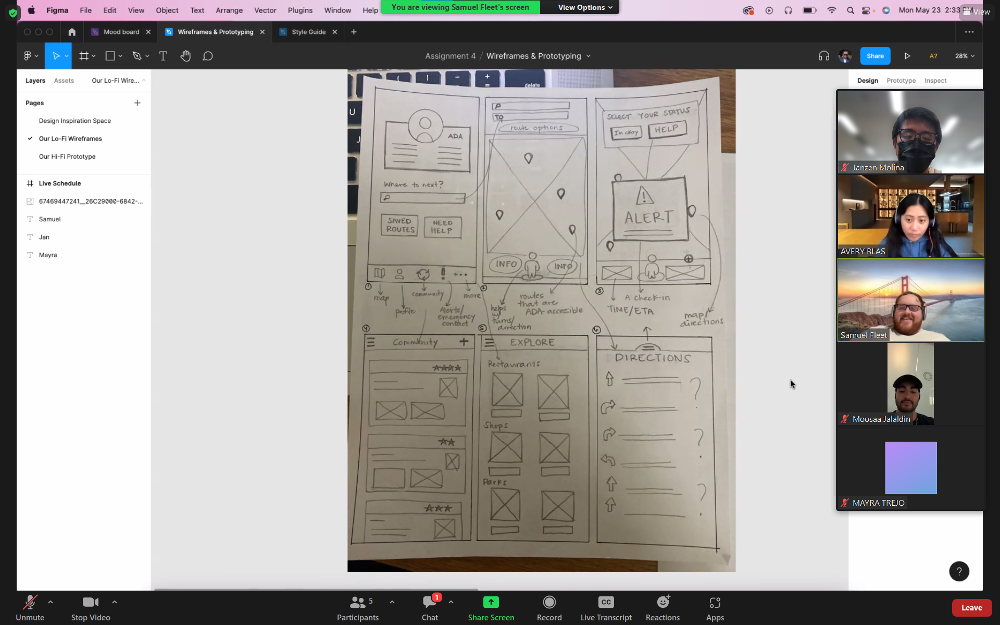

NavAssist
A mobile app aiming to assist the physically disadvantaged with navigating unfamilar areas.
Team: Samuel Fleet (Lead), Mayra Trejo, Janzen Molina, and Moosaa Jaladin
Part 1: User Research
Challenge
As part of our design goal of enabling people to live more enriching lives, we immediately gravitated toward problems relating to accessability and equity of access to services. We wanted to explore how BIPOC, ADA, or other groups might have less access to things such as alternative transport, charging infrastructure and how we can deal with these groups being manipulated and abused in digital communities. Other ideas included public transport safety, vehicle safety, and the increased independence and freedoms that can be provided to ADA groups in an increasingly digital world.
Objective
We aim to assist physically disadvantaged people so that they are able to navigate unfamiliar areas with prior knowledge of the terrain, landmarks, and other up to date information that aids in their navigation. We believe that by designing a mobile app that prioritizes the most relevant information for those with a physical disability and emphasizes ease of use, we can help our stakeholders achieve this goal.
Stakeholders
Primary stakeholders: New and returning members of ACM at UCSD
Secondary stakeholders: Club board members that want to upload a resume but also want to access the database of stored resumes to send to recruiters
Tertiary stakeholders: Recruiters and other industry personnel that will interact with board members and receive the stored resumes
Problem Statements
1. How can we improve the low use of public transportation among the elderly and ADA community?
2. How might we help UC San Diego students feel safer away from campus to increase usage of the Blue Line?
3. How might we improve equity in the development of infrastructure for electric vehicles?
4. How might we help those with ADA disabilities more easily navigate cities by improving routefinding applications?
Brainstorming
Research
Using academic papers and books, our team discovered statistics that helped guide our individual understanding of the task at hand. Specifically, we found that about one billion people worldwide have some sort of disability, with a large portion of that population being over 60. However, in spite of ongoing efforts to add more accessibility-friendly options for mobility, inequitable options like cars still hold a major stake in the transport industry. Meanwhile, current infrastructure for those with disabilities becomes more dated and out of code with handicap regulations. Looking into past solution ideations, we found that a sense of community for the disabled was one method of keeping people mobile while improving infrastructure targeting disabled populations would prevent them from resorting to more inequitable and less pleasant options.

Affinity Mapping
Using an affinity map, we organized our information into relevant groups that would help the team make sense of all of our findings and create relationships between different sections.
Team's affinity diagram to organize research insights into categories
Ideation
Based on our research insights, we connected our ideas and we came up with a specific design goal that would empathize with our target user's needs:
We were to create a mobile navigation app with:
- Data based on crowdsourcing from businesses and other people in need of accessibility
- Live updates for any changes in routes
- ADA status for routes
- Contextual information such as the incline/decline of each location from point A to point B
- Simplified versions of navigational artifacts such as maps, signs, and public transportaion stops
- Easy access to staff members and security at locations that might require more assistance for disabled populations
Stakeholder Interviews
In order to better understand the stakeholders, we conducted interviews with people fitting our target demographic or those that were knowledgeable about that particular user.
My particular interview was with a woman in the 55+ age range that did not have a disability herself, but was the caretaker of an elderly woman with mobility issues. I had discovered that the main issue was the surrounding infrastructure was not well taken care of in her city which made the area tiresome to navigate. Additionally, navigational apps gave her issues because of unreliable GPS signals and a lack of contextual information about where her destination was. She also said she preferred paper maps such as the Thomas Guides because of their much more straightforward information patterns.
Based on this information, I relayed to my team that we need to adapt for the more niche situations in which users can get lost while using navigation apps by making the user interface consistent across screens and ensuring that context is given to the user as much as possible when en route to a destination. I also requested that we leverage the live updates and other mobile-only features in order to improve on the information cycle that is presented by paper-only products.
User Personas
Based on our team's collective interviews, we then wrote user personas in order to solidify our foundational understanding of the user's aspirations and obstacles. We also included information about their relevant resources and background on the type of scenarios they would be facing.
Stakeholder Narratives
User Scenarios
From our personas, we came up with more specific and realistic scenarios in which the user would use our planned app.
Team's user scenarios based on possible stakeholder experiences
Storyboards
We then took these scenarios and visualized them using storyboards.

Team's user storyboards that provide a visualization for the given scenarios
Part 2: Prototype Design
Competitive Analysis
In order to get a better understanding of existing iterations of navigation for different populations, we ran a competitive analysis against 10 different products varying in information displayed and medium in which the information is displayed.
In summary, we found that existing solutions in the market offer many of the things that we want to offer, but there is no coherent solution that addresses some of the problems we found for our two personas and stakeholder groups. One interesting find was that crowdsourcing of information was a fairly common feature across the competitors we looked at. Another was that a traditional map actually offers more valuable features that are useful to ADA and elderly individuals than expected.
Sample of table of different competing products and their individual features
Core Features
Based on our stakeholder needs and understanding of existing products from the competitive analysis, we narrowed our design focus to three particular features that needed to be accounted for:
Accessibility options - to accomodate for the needs of all users with as little friction as possible
Feedback (crowdsourcing) - to allow users to use local resources and gain reliable travel information
Route-finding - to personalize the navigation experience for each user who has their own methods of getting between two places
Paper Sketches
In order to better understand how our app's overall user flow would look, the team came up with various paper sketches that would determine how our app was laid out and what users would interact with the most.

Team's paper sketches for rapid prototyping app ideas
User flow
Based on our sketches, we determined 4 primary types of user flow:
- The user is using the navigation to get from point A to point B in a certain amount of time, either by following an existing route and possibly dealing with an obstruction or by searching for a new location and exploring
- Re-orienting themselves with their current location and navigating
- Displaying their DisaView card, an accessibility-friendly card that would allow for expedited access to public transportation for quicker mobility
- Adding information for other users to be aware of through the crowdsourcing page
Initial Wireframes
In order to lay out the function of each screen while including more relevant information to the final design of our project, we created low fidelity wireframes.

Sample of initial low and mid fidelity wireframes
Mood Board
Based on our general theme of accomodating for the user, we based our color choices for the final design based on colors we found in images representative of certain characteristics we were to convey in the design.

Team's moodboard to determine color scheme based on keywords
Style Guide
In order to design our final prototype efficiently and consistently, we created a style guide that organized all of our used text, graphics and interfaces into a system that defined what certain aspects of the app would look like across the board.
Sample of team's component library as part of the overall project style guide
Initial Prototype
Sample of screens from the team's initial prototype
Link to prototype
User Testing
We came up with an initial testing structure for how users would be interviewed: The facilitator will ask the interviewee to ‘speak their thoughts’ as they work through each task, and also look at their interactions with the interface, where mistakes were made, and whether their mental image is congruent with our own and that of the design. Also, we would ask them to speak about their initial impressions of the interface and figure out if they immediately understand what this might be for?
Screenshot from one of our user testing sessions conducted over Zoom
Feedback
Based on this structure, we got feedback from 3 user interviews to inform our final prototype design:
- The assistive touch feature needed more context, maybe a better icon
- The logo of the app should be a button and clickable or we should introduce a dedicated home button into the footer of some kind
- We need to take disability into account for the icons in terms of visibility, sizing and color choice
- The concept of the ID pass and the icons we used to represent it did not make clear sense to the user
- The back button is not clear
- Button for attachment and devices does not follow accessibility standards and should be in a more reachable location
- The Create an account page is hard to see
- Create distinction between accessibility options and access needs
- Lighter colours would be more inviting
Final Prototype
Sample of screens from the team's final prototype
Link to prototype